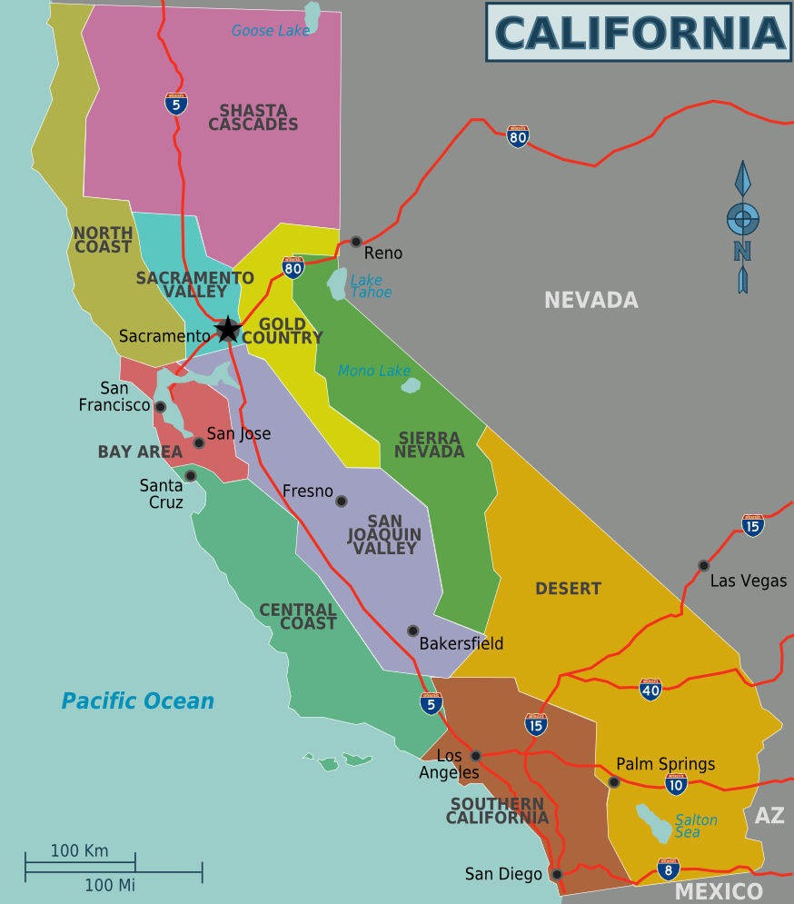

Overview
As you can see, this is a BIG state, and you will probably want to focus on a particular city or area when you visit. Have you decided where in California you want to go? Do you want to check out the San Francisco Bay Area and maybe work in a side trip to the Napa-Sonoma Wine Country? With a myriad of different places to feast your eyes on, you will have no shortage of breathtaking sights to visit in California. To help you out, here are the some beautiful places in California to visit in your lifetime. California varies greatly, ranging from the forested northern coastal regions to the rugged interior mountains to the harsh southern desert. Sandwiched in the center of California is the fertile Central Valley, home to a massive amount of agriculture. California was recognized as a state in 1850, and its population increased steadily since then. Today California is the most populous state in the US with over 38 million residents.
California boasts several superlatives in its collection of flora: the largest trees, the tallest trees, and the oldest trees. California's native grasses are perennial plants, and there are close to hundred succulent species native to the state. After European contact, these were generally replaced by invasive species of European annual grasses; and, in modern times, California's hills turn a characteristic golden-brown in summer. Because California has the greatest diversity of climate and terrain, the state has six life zones which are the lower Sonoran Desert; upper Sonoran (foothill regions and some coastal lands), transition (coastal areas and moist northeastern counties); and the Canadian, Hudsonian, and Arctic Zones, comprising the state's highest elevations.